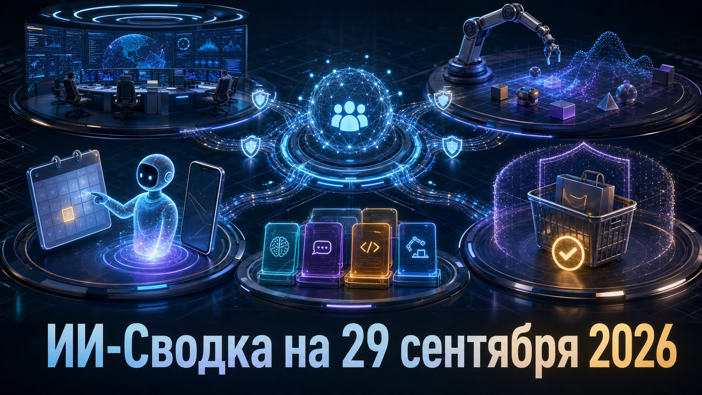

Новостей сегодня меньше, чем обычно
Повестка дня показывает, что конкуренция вокруг агентов ИИ быстро выходит за пределы чат-интерфейсов. Компании одновременно строят корпоративные платформы, закрепляют технологии physical AI, привлекают крупный капитал и формируют безопасные пути для покупок, выполняемых агентами.
Главный практический вопрос теперь не только в качестве модели, но и в том, где она сможет действовать: в корпоративных системах, в симулированной физической среде или в checkout интернет-магазина.
Meta объявила Meta Enterprise Platform — новое направление для вывода своего ИИ-стека в бизнес. В стартовый набор компания включила агент Muse, Meta Business Agent, Muse API и Muse Code, а руководителем назначила бывшего CEO MongoDB Чирантана «CJ» Десаи, который будет подчиняться Марку Цукербергу.
Это не просто очередная функция Muse, а попытка собрать вокруг него корпоративный продуктовый и API-контур. В анонсе пока не раскрыты цены, регионы и сроки коммерческой доступности, поэтому масштаб реального развёртывания ещё предстоит оценить. Подробности опубликованы в анонсе Meta.
AMD договорилась приобрести World Labs — разработчика world models, основанного Фэй-Фэй Ли, — за $8,2 млрд. По данным TechCrunch, после закрытия сделки Ли станет исполнительным вице-президентом и chief scientist AMD.
World Labs разрабатывает модели для понимания и моделирования физической реальности, в том числе среды, пригодные для обучения роботов. Для AMD это ставка на связку ускорителей, симуляции и physical AI в конкуренции за будущие робототехнические нагрузки. Сделка ещё требует регуляторных согласований; её закрытие ожидается до конца года.
Разработчик персонального агента Instinct подтвердил Series C на $1 млрд при оценке $10 млрд. Среди инвесторов названы Sequoia Capital, Benchmark Capital и Coatue, сообщает TechCrunch.
Instinct продвигает агента для бытовых действий: бронирований, покупок, оплаты счетов и звонков через concierge. Такой объём финансирования показывает, что инвесторы готовы оценивать потребительских агентов не как отдельные чат-боты, а как потенциальный новый интерфейс к транзакциям и сервисам. При этом публичные метрики использования и подробные условия раунда не раскрыты.
Shopify объявила поддержку WebMCP в checkout, включая Shop Pay. Через новые инструменты агент ИИ сможет получать данные о корзине, менять адрес или способ доставки и завершать заказ после авторизации покупателя, пишет TechCrunch.
Для агентной коммерции это важный переход от имитации действий в браузере к формализованному пути оформления заказа. Shopify также противопоставляет browser-based WebMCP своему hosted MCP server для server-to-server агентов. Поддержка должна разворачиваться для подходящих продавцов Shopify, но фактический пользовательский опыт будет зависеть от совместимости конкретных агентов и магазинов.
Google сообщила, что начнёт автоматически переносить созданных пользователями ассистентов Gemini Gems в новый формат Skills 17 ноября. Gems пока останутся доступны, но далее должны быть заменены новым механизмом, сообщает TechCrunch.
Gems позволяли пользователям создавать и делиться специализированными ассистентами для отдельных задач. Миграция может упростить дальнейшее развитие пользовательских сценариев в Gemini, однако Google пока не раскрыла полный набор отличий Skills от Gems и возможные последствия для существующих настроек.
*Meta и ее сервисы - в России запрещены